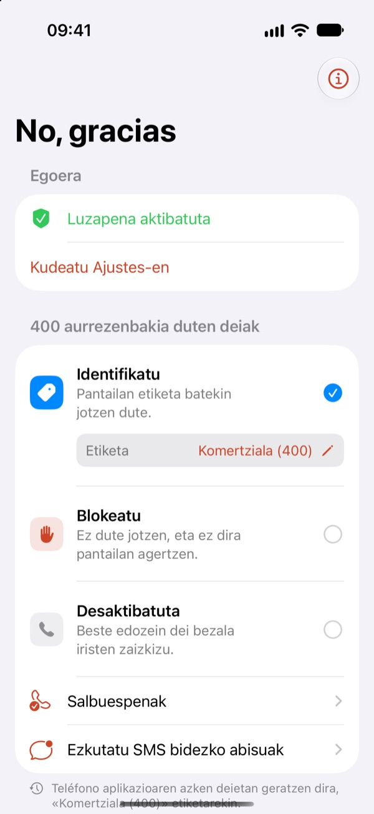
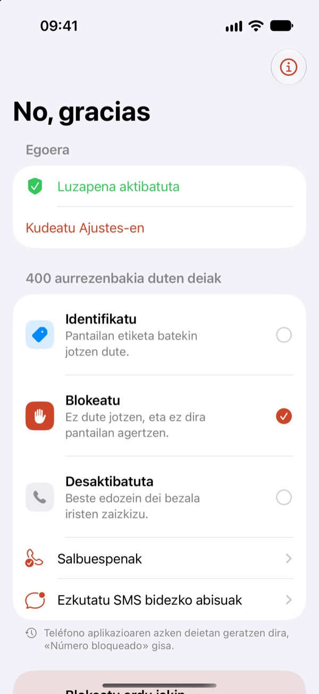

Prentsa
«No, gracias»-ri buruz idazteko behar duzun guztia. Testua, pantaila-argazkiak eta ikonoa libreki erabil ditzakezu.
Laburbilduz
«No, gracias» iPhonerako doako aplikazio bat da, 400 aurrezenbakia duten dei komertzialak identifikatzen edo blokeatzen dituena; aurrezenbaki hori derrigorrezkoa da Espainian 2026ko urriaren 17tik. Ez du iragarkirik ezta konturik, eta ez du daturik biltzen: dena iPhonean gertatzen da.
Datuak
- Izena: No, gracias
- Garatzailea: Oswaldo Rubio, iOS garatzaile independentea
- Argitalpena: 2026ko azaroaren 7a (Espainiako App Store)
- Prezioa: doan, iragarkirik, harpidetzarik eta ordainpeko bertsiorik gabe. Aukerako dohaintzak, ezer desblokeatzen ez dutenak.
- Eskakizunak: iOS 18 edo berriagoa duen iPhonea
- Hizkuntzak: euskara, gaztelania, katalana, galiziera eta ingelesa
- Pribatutasuna: zerbitzaririk, konturik, analitikarik eta jarraipenik gabe
- App Store: apps.apple.com/es/app/id6830892528
Zer egiten duen
- Identifikatu: deiak jo egiten du, baina pantailan «Komertziala (400)» agertzen da, eta zuk erabakitzen duzu erantzun ala ez.
- Blokeatu: 400 deiek ez dute jotzen eta ez dira agertzen, eta deitzen duenak ez daki.
- Bere kabuz aldatzea: blokeatu lotan edo lanean zauden bitartean, kontzentrazio-iragazkiekin, Kontrol Zentroarekin, Sirirekin edo Atajos-ekin.
- Salbuespenak: beti jotzen duten 400 zenbaki jakin batzuk, bankuarena edo aseguruarena adibidez.
- SMS-iragazkia: dagoeneko blokeatutako 400 deiei buruz operadoreak bidaltzen dituen abisuak ezkutatzen ditu.
Istorioa
2026ko urriaren 17tik aurrera, Espainiako dei komertzialak 400ekin hasten diren zenbakietatik egin behar dira. Arauari esker ezagut daitezke, baina ez ditu geldiarazten: jotzen jarraitzen dute. Zeuden aukerek ordaindu egin behar zuten blokeatzeko, edo iragarkiak erakusten zituzten.
Oswaldo Rubio iOS garatzaileak «No, gracias» sortu zuen arazo hori doan eta daturik bildu gabe konpontzeko. Lehen bertsioa ideia izatetik aplikazio funtzional izatera 24 ordu baino gutxiagoan iritsi zen, Anthropic-en Claude AA laguntzailearen laguntzarekin garatuta. Harrezkero, automatizazioa, salbuespenak, SMS-iragazkia eta bost hizkuntza gehitu ditu, euskara eta galiziera barne, erabilgarritasun-aplikazioetan ohikoak ez direnak.
Materiala
- Ikonoa (1024 × 1024): argia · iluna
- App Storeko pantaila-argazkiak, gaztelaniaz (1320 × 2868): identifikatu · blokeatu lotan zaudenean · komertzialak bakarrik
- Aplikazioaren pantaila-argazkiak, euskaraz: identifikatu · blokeatu · automatizatu
- Sare sozialetarako irudia (1200 × 630): og/eu.png


Harremanetarako
Elkarrizketetarako edo edozein daturako: info@nogracias.app.

